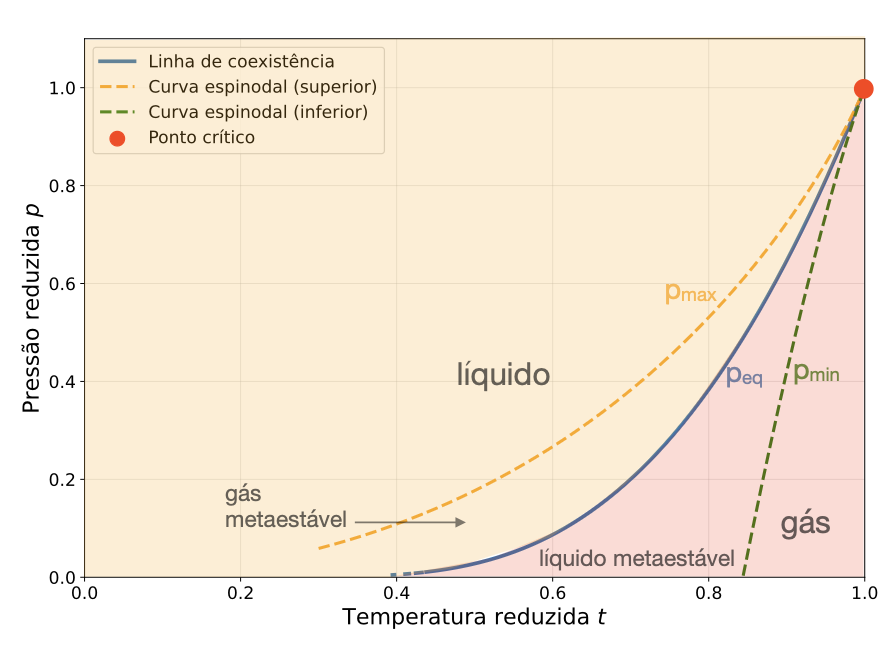

No plano das variáveis reduzidas, a linha de coexistência \(p_{eq}(t)\) separa os estados de equilíbrio líquido e gasoso. Ela é obtida pela construção de Maxwell, isto é, pela condição de igualdade do potencial de Gibbs molar nas duas fases. As curvas espinodais delimitam o fim da estabilidade local.
\[
\left(\frac{\partial p}{\partial v}\right)_t = 0,
\qquad
p_{\min}=p(v_{\min},t),
\qquad
p_{\max}=p(v_{\max},t).
\]
